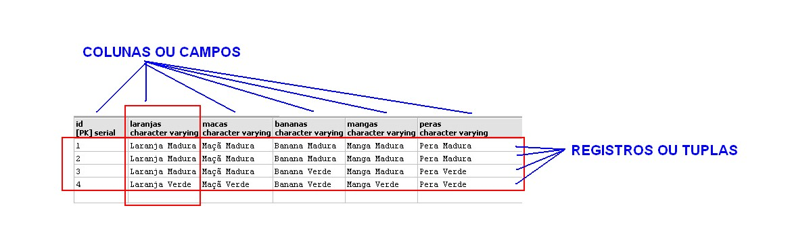
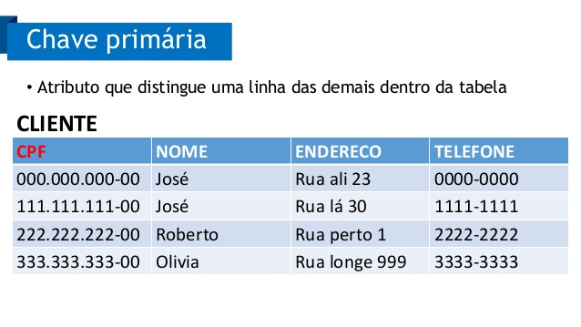
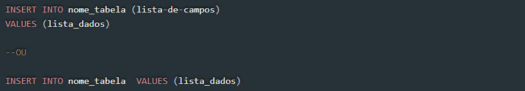

Registro
No contexto de um banco de dados relacional, um registro representa um único item implícito de dados estruturados em uma tabela. Em termos simples, uma tabela de banco de dados pode ser imaginada como consistindo de linhas e colunas ou campos. Cada linha em uma tabela representa um conjunto de dados relacionados e toda linha na tabela possui a mesma estrutura.

Tipos de dados
Tipos de dados são uma forma de classificar as informações que serão armazenados no banco de dados.
O MySQL tem todos os tipos numéricos possíveis, o que inclui exatos, aproximados, inteiros, de ponto fixo, ponto flutuante
Armazenamento de Data e Hora
-DATE
-TIME
-TIMESTAMP
-YEAR

Dados em Strings
CHAR
VARCHAR
BINARY
VARBINARY
BLOB
TEXT
SET
O GEOMETRY pode armazenar qualquer tipo de valor geométrico. Os outros valores simples (POINT, LINESTRING e POLYGON) têm seus valores restritos aos tipos geométricos a que se referem.
Os outros, que seguem listados, carregam valores relativos a coleções/coletivos:
GEOMETRYCOLLECTION
MULTILINESTRING
MULTIPOINT
MULTIPOLYGON
Chave-primária
Chave primária é um conceito muito importante que está diretamente ligado à possibilidade de se consultar dados de tabelas do banco de dados. Uma chave primária é um atributo ou conjunto de atributos que identifica unicamente um registro na tabela e que por isso não pode ser repetido
Podemos definir um atributo como sendo chave primária explicitamente, ou seja, incluímos um campo contador que é incrementado em um a cada novo registro inserido ou então algum atributo que temos certeza que identifica unicamente um registro, como o número do CPF num cadastro de pessoa.

Linguagem SQL
A linguagem SQL foi criada com o objetivo de padronizar os comandos de manipulação de dados em SGBD’s. Hoje em dia, apesar de a linguagem possuir uma quantidade considerável de extensões e implementações proprietárias.
SELECT
O comando SELECT permite recuperar os dados de um objeto do banco de dados, como uma tabela, view e, em alguns casos, uma stored procedure (alguns bancos de dados permitem a criação de procedimentos que retornam valor).
INSERT
O comando INSERT também possui algumas variações que devem ser respeitadas para evitar problemas. O primeiro exemplo abaixo mostra a inserção na tabela Clientes. Repare que logo abaixo tem um fragmento da criação da tabela Clientes mostando que o campo ClienteCodigo é IDENTITY, portanto não deve ser informado no momento do INSERT.

UPDATE
O comando UPDATE em SQL permite atualizar dados em uma coluna de um registro em uma tabela, ou todas as colunas em todos os registros na tabela.
DELETE
Uma declaração DELETE remove um ou mais registros de uma tabela. O comando DELETE pode conter as condições de deleção das informações.